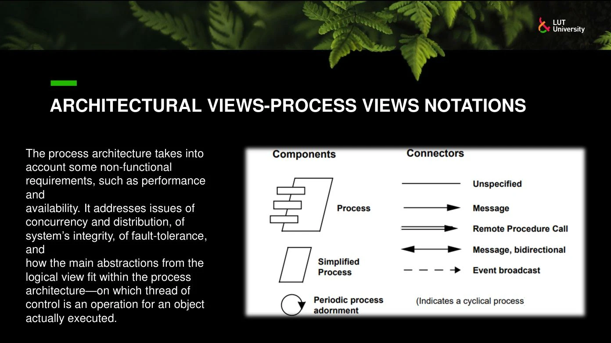
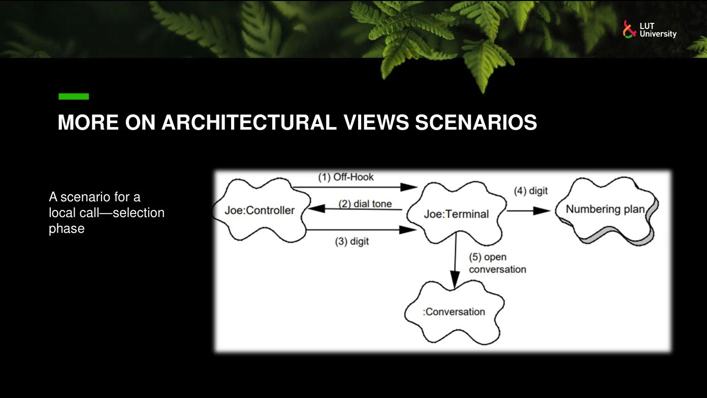
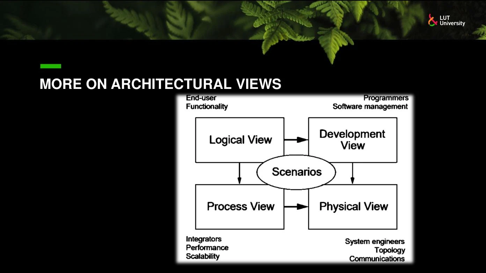

CT60A4050 软件工程基础 · 第 06 / 14 讲
第 6 讲 · 软件体系结构设计
Software Architectural Design
所属章节：第 2 章 需求、建模与架构
资料来源 · 1 项 / 已附 0 项
13_Week 7/1_SE - Lecture 6 - 2026.pdf未附原文件
未附文件仅列原始名称；版本与核对日期由维护者登记。
本节定位
需求说「做什么」，体系结构说「整体怎么组织」。这一讲回答四个问题：架构设计决策如何影响非功能属性；用什么视图来描述架构；有哪些经过验证的架构模式（MVC、分层、仓库、客户-服务器、管道-过滤器）；以及一类系统的通用架构（应用架构）。
与前后衔接：第 5 讲的类图与构件图是描述架构的符号；本讲的「性能/安全/可用性/可维护性」与第 7 讲的非功能测试、第 10 讲的质量属性直接对应；第 12 讲的 IBM 案例（RAD 与 WAS 的接口依赖）与 Pearson 案例（服务化与团队结构）都是架构决策的现实版本。
学完本节你应当能够：
- 说明架构设计为什么是需求工程与设计之间的关键环节
- 针对给定非功能需求（性能、安全、安全（safety）、可用性、可维护性）选择相应的架构策略
- 说出逻辑、开发、进程、物理、场景五种视图各自回答什么问题
- 用「名称—描述—何时使用—优点—缺点」五段式描述五种架构模式
- 判断一个业务系统适合分层架构还是仓库架构，并说明理由
- 说明应用架构（application architecture）的五种用途
6.1 什么是体系结构设计
课件定义：“Architectural design is concerned with understanding how a software system should be organized and designing the overall structure of that system.”（体系结构设计关注理解软件系统应如何组织，并设计该系统的整体结构。）
它的特殊地位在于：架构设计是设计与需求工程之间的关键连接，因为它识别系统中的主要结构构件以及它们之间的关系。其产出是一个架构模型，把系统描述为一组相互通信的构件。
课件还给出一个与敏捷有关的现实判断：普遍认为敏捷过程的早期阶段应设计整体系统架构；原因是重构体系结构的代价很高，因为它影响系统中太多构件。这与 XP「简单设计」并不矛盾——XP 反对的是过度预设计，不是反对有一次总体架构决策。
6.2 小架构与大架构
| 层次 | 英文 | 关注对象 | 问题 |
|---|---|---|---|
| 程序内架构 | architecture in the small | 单个程序 | 单个程序如何分解为构件 |
| 企业级架构 | architecture in the large | 包含其他系统、程序、程序构件的复杂企业系统 | 这些企业系统分布在不同的计算机上，而这些计算机可能由不同公司拥有和管理 |
两者的差别不只是规模，而是治理边界：程序内架构你可以决定一切；企业级架构中，你只能决定自己那一块，其他系统的升级节奏、接口稳定性、故障责任都不由你控制。
6.3 显式架构的三个好处
- 干系人沟通：架构可作为系统干系人讨论的焦点；
- 系统分析：使「系统能否满足其非功能需求」的分析成为可能；
- 大规模复用：架构可在一系列系统中复用，并可发展产品线架构（product-line architectures）。
6.4 盒线图：最常用，也最受批评
简单、非正式的框图（box and line diagrams）是记录软件架构最常用的方法。但它受到批评：缺乏语义（lack semantics），不显示实体之间关系的类型，也不显示实体的可见属性；它过于抽象，既不说明构件关系的性质，也不说明子系统的外部可见属性。
然而课件给出平衡结论：盒线图对与干系人沟通和项目计划仍然有用。这与第 5 讲「模型用途决定要求」是同一条原则：用于讨论的图不必精确，用于生成的图必须完整。
架构模型的两类用途：一是促进对系统设计的讨论（高层视图不杂糅细节，干系人能理解抽象视图，从而不被细节干扰）；二是记录已设计的架构（目标是产出完整的系统模型，显示不同构件、它们的接口与连接）。
6.5 架构设计与系统特征
架构设计是创造性过程，因系统类型而异；但有一批跨所有设计过程的共同决策，它们影响系统的非功能特征。课件给出五组「特征 → 策略」的对应，这是本节最高频的考点：
| 系统特征 | 架构策略（课件原句要点） | 解释 |
|---|---|---|
| 性能 performance | Localise critical operations and minimise communications. Use large rather than fine-grain components. | 把关键操作局部化、最小化通信；用大粒度构件而非细粒度构件，减少跨构件调用次数 |
| 安全 security | Use a layered architecture with critical assets in the inner layers. | 分层架构，把关键资产放在内层；外层被攻破时内层仍有保护 |
| 功能安全 safety | Localise safety-critical features in a small number of sub-systems. | 把安全关键功能集中到少数子系统，便于验证与认证 |
| 可用性 availability | Include redundant components and mechanisms for fault tolerance. | 冗余构件 + 容错机制 |
| 可维护性 maintainability | Use fine-grain, replaceable components. | 细粒度、可替换构件，便于局部修改 |
6.6 架构复用与模式
同一领域的系统往往有相似的架构，反映该领域的核心概念；应用产品线（application product lines）围绕一个核心架构构建，用变体满足特定客户需求。系统架构可围绕一个或多个架构模式（也称风格 style）设计：模式捕捉架构的本质，并可以以不同方式实例化。
课件的模式描述采用统一的五段式：NAME / Description / When used / Advantages / Disadvantages。答题时按这五段写，结构分基本就稳了。
6.7 MVC 模式
| 项 | 内容 |
|---|---|
| 名称 | MVC（Model-View-Controller） |
| 描述 | 把表示与交互从系统数据中分离。系统分为三个逻辑构件：Model 管理数据及对数据的操作；View 定义并管理数据如何呈现给用户；Controller 管理用户交互，并把交互传给 View 与 Model。 |
| 何时使用 | 有多种方式查看与操作同一份数据时；未来对交互与呈现的需求未知时。 |
| 优点 | 数据可以独立于其表示而变化，反之亦然；支持以不同方式呈现同一数据，一处表示的修改会体现在所有表示中。 |
| 缺点 | 当数据模型与交互都很简单时，会引入额外代码与复杂度。 |
MVC 的本质是「一份数据、多种视图、一个控制器」。它解决的是「表示与数据耦合」问题，而不是「性能」问题；因此在高并发场景中，MVC 本身不提供任何性能优势。
6.8 分层架构
分层架构用于建模子系统之间的接口：把系统组织成一组层（或抽象机器），每层提供一组服务。它支持在不同层中增量开发子系统；当某层接口变化时，只有相邻层受影响。缺点是：把系统这样分层常常是人为的（often artificial）。
| 项 | 内容 |
|---|---|
| 名称 | LAYERED ARCHITECTURE |
| 描述 | 把系统组织成层，每层关联一组相关功能。一层向其上层提供服务，因此最底层代表贯穿系统使用的核心服务。 |
| 何时使用 | 在既有系统之上构建新设施时；开发分散在多个团队、每个团队负责一层功能时；需要多级安全（multi-level security）时。 |
| 优点 | 只要接口保持，整层可以被替换；每层可提供冗余设施以提高可靠性。 |
| 缺点 | 实践中很难在层间做干净分离，高层可能不得不直接与低层交互；性能可能成为问题，因为一个服务请求在每层都要被解释一次（multiple levels of interpretation）。 |
6.9 仓库架构
子系统必须交换数据，有两条路：共享数据放在中央数据库或仓库中，供所有子系统访问；或每个子系统维护自己的数据库并显式传递数据。当需要共享大量数据时，仓库模型最常用，因为它是高效的数据共享机制。
| 项 | 内容 |
|---|---|
| 名称 | REPOSITORY |
| 描述 | 系统中所有数据由一个中央仓库管理，所有系统构件都可访问；构件之间不直接交互，只通过仓库交互。 |
| 何时使用 | 系统产生大量需长期保存的信息时；数据驱动系统中「数据进入仓库触发动作或工具」时。 |
| 优点 | 构件相互独立，不需要知道其他构件存在；一个构件做的修改可传播到所有构件；数据集中管理，一致性容易保证。 |
| 缺点 | 仓库是单点故障，仓库出问题影响整个系统；所有通信都经由仓库可能低效；把仓库分布到多台计算机上可能很困难。 |
6.10 客户-服务器架构
客户-服务器是分布式系统模型，展示数据与处理如何分布在一组构件上；它可以在单台计算机上实现。组成是：一组提供特定服务（打印、数据管理）的独立服务器；一组调用这些服务的客户；以及允许客户访问服务器的网络。
| 项 | 内容 |
|---|---|
| 名称 | CLIENT-SERVER |
| 描述 | 把系统功能组织成服务，每个服务由独立服务器提供；客户是这些服务的使用者，通过访问服务器来使用它们。 |
| 何时使用 | 需要从多个位置访问共享数据库中的数据时；由于服务器可复制，也用于系统负载可变时。 |
| 优点 | 服务器可分布到网络上；通用功能可对所有客户可用，不需要每个服务都实现一遍。 |
| 缺点 | 每个服务都是单点故障，易受拒绝服务攻击或服务器故障影响；性能不可预测，因为它同时取决于网络与系统；若服务器由不同组织拥有，可能有管理问题。 |
6.11 管道-过滤器架构
功能变换把输入处理成输出，这类架构可称为管道-过滤器模型（如 UNIX shell）。变体非常常见：当变换是顺序的，就是批顺序模型（batch sequential model），广泛用于数据处理系统。它不太适合交互式系统。
| 项 | 内容 |
|---|---|
| 名称 | PIPE AND FILTER |
| 描述 | 把数据处理组织成：每个处理构件（过滤器）是离散的，执行一种数据变换；数据像在管道中一样从一个构件流到另一个构件处理。 |
| 何时使用 | 数据处理应用中，输入分阶段处理并生成相关输出时。 |
| 优点 | 易理解，支持变换复用；工作流风格匹配许多业务流程的结构；通过增加变换来演化很直接；可实现为顺序或并发系统。 |
| 缺点 | 通信的变换之间必须就数据传输格式达成一致；每个变换必须解析其输入、反解析其输出为约定格式；这增加系统开销，并可能使使用不兼容数据结构的变换无法复用。 |
6.12 架构视图
设计架构时要问两个问题：哪些视图或视角有用？用什么符号描述架构模型？关键前提是：每个架构模型只展示系统的一个视图或视角。
表示法之争：有人认为 UML 适合描述与记录系统架构；架构描述语言（ADLs）已被开发出来，但并未被广泛使用。
五种视图（课件逐一介绍，必须能对上「视图—回答的问题」）：
| 视图 | 英文 | 回答什么问题 | 内容要点 |
|---|---|---|---|
| 逻辑视图 | logical view | 系统向用户提供哪些服务（功能需求） | 把系统分解为一组关键抽象，多来自问题域，以对象或对象类的形式表示；是功能的蓝图（如空管系统的逻辑视图） |
| 开发视图 | development view | 软件在开发环境中如何组织 | 关注实际的软件模块组织：软件被打包成可由一个或少数开发者开发的块（程序库、子系统）；关注子系统分解 |
| 进程视图 | process view | 运行时并发与分布如何安排 | 考虑性能、可用性等非功能需求；处理并发与分布、系统完整性、容错，以及逻辑视图中的主要抽象落在哪个控制线程上执行 |
| 物理视图 | physical view | 软件如何映射到硬件节点 | 主要考虑可用性、可靠性（容错）、性能（吞吐）、可扩展性；软件运行在一组计算机或处理节点（nodes）组成的网络上 |
| 场景视图 | scenarios | 用具体用例把各视图串起来 | 用若干场景（如一次本地通话的选路阶段）验证架构能否支撑真实使用 |
6.13 应用架构
应用系统是为满足组织需要而设计的。由于业务有许多共同点，其应用系统也往往有共同架构，反映应用需求。通用应用架构（generic application architecture）是某一类软件系统的架构，可被配置与适配，以构建满足特定需求的系统。
应用架构的五种用途：作为架构设计的起点；作为设计检查清单；作为组织开发团队工作的方式；作为评估构件可复用性的手段；作为讨论应用类型的词汇表。
信息系统架构：信息系统有一个通用架构，可组织为分层架构；它们是基于事务的系统，因为与这些系统的交互通常涉及数据库事务。层包括：用户界面、用户通信、信息检索、系统数据库。
另一种更常见的四层划分（课件后一页）：
| 层 | 职责 |
|---|---|
| 表示层 Presentation Layer | 负责用户与软件系统的交互 |
| 应用/业务层 Application/Business Layer | 处理与完成功能需求相关的方面 |
| 领域层 Domain Layer | 负责算法与程序构件 |
| 基础设施/持久化/数据库层 Infrastructure/Persistence/Database Layer | 负责处理数据与数据库 |
注意两层「分层」说法的差别：前者按「界面—通信—检索—数据库」的技术栈切分，后者按「表示—业务—领域—基础设施」的职责切分。答题时先说明采用哪一种切分口径，再展开。
架构设计连接需求与实现，识别主要构件及其关系。高频考点是五组特征到策略的对应，尤其一对矛盾：性能要求把关键操作局部化、用大粒度构件减少通信；可维护性却要细粒度、可替换构件便于局部修改。两者方向相反，正说明架构是权衡——先定本项目最重要的两三个质量属性再取舍。小架构与大架构的差别不只是规模，而是治理边界：企业级架构里其他系统的升级节奏、接口稳定性都不由你控制。盒线图缺乏语义，但用于干系人沟通与项目计划仍有效。
原版图页（源 PDF 插图页）







| English | 中文 | 说明 / 例句 |
|---|---|---|
| architectural design | 体系结构设计 | Understanding how a system should be organised and designing its overall structure. |
| architecture in the small | 程序内架构 | Architecture of individual programs: how one program is decomposed. |
| architecture in the large | 企业级架构 | Architecture of complex enterprise systems including other systems, possibly owned by different companies. |
| box and line diagram | 盒线图 | Informal block diagram; lacks semantics but useful for communication and planning. |
| architectural pattern | 架构模式 | A stylised description of good design practice tried in different environments. |
| MVC | 模型-视图-控制器 | Separates presentation and interaction from system data. |
| layered architecture | 分层架构 | Layers of related functionality; each layer provides services to the layer above. |
| repository architecture | 仓库架构 | All data managed in a central repository; components interact only through it. |
| client-server | 客户-服务器 | Services delivered by separate servers; clients access them over a network. |
| pipe and filter | 管道-过滤器 | Each processing component performs one transformation; data flows between them. |
| application architecture | 应用架构 | A generic architecture for a type of software system, configurable for specific requirements. |
| architectural view | 架构视图 | Logical, development, process, physical and scenario views; each shows one perspective. |
| single point of failure | 单点故障 | One component whose failure brings down the whole system, e.g. a repository or a server. |
情境：某证券行情系统要求：① 行情推送端到端延迟 < 100 ms；② 交易指令必须防止越权；③ 系统全年可用性 99.99%；④ 策略模块需每周更新并可独立上线。请为每条需求给出架构策略。
分析：逐条对应课件的「特征 → 策略」表。
① 性能 → 局部化关键操作、最小化通信、使用大粒度构件。具体做法：把行情解析与推送放在同一进程内，避免跨进程序列化；用批量推送代替逐条推送。
② 安全 → 分层架构、关键资产在内层。具体做法：把指令校验与签名放在最内层，外层网关只做限流与鉴权；即使外层被攻破，内层仍需独立授权。
③ 可用性 → 冗余构件 + 容错机制。具体做法：推送服务双活、数据库主备 + 自动切换、关键链路熔断降级。
④ 可维护性 → 细粒度、可替换构件。具体做法：策略模块做成独立服务/插件，定义稳定接口，支持灰度与回滚。
冲突提示：①要「大粒度」，④要「细粒度」——两者在同一系统里冲突。可行解是分层处理：行情链路用大粒度，策略模块用细粒度，并在架构文档中明确这条权衡。
情境：某高校要做「教师工作量统计」系统：数据来自教务、科研、人事三个库；同一份数据要给教师看（明细）、给院长看（汇总）、给人事看（报表导出）。请选架构模式并说明理由。
分析：先抓「同一份数据的多种表示」这个特征——这是 MVC 的典型适用条件；再抓「多来源数据 + 事务一致性」——这是仓库架构的适用条件。两者并不互斥：系统整体可用仓库，表示层用 MVC。
方案：总体采用仓库架构：建立中央工作量数据仓库，从三个源系统抽取、清洗、汇总；各前端不直接连源库，只读仓库。表示层采用 MVC：Model 是工作量数据与聚合逻辑，View 分别是教师明细页、院长看板、人事报表，Controller 处理筛选与导出请求。
理由：仓库避免三套口径不一致（数据集中、可一致管理），并使前端与源系统解耦；MVC 使三种视图共享同一模型，修改一处表示不影响其他。
风险：仓库是单点故障，且抽取任务失败会导致数据陈旧——需加监控与重跑机制；这正是仓库模式「缺点」栏的内容。
情境：某银行每晚要处理百万级交易流水：解析 → 反洗钱规则匹配 → 计费 → 汇总 → 生成报表。另有柜员需要实时查询单笔交易状态。请判断两类需求分别适合什么架构。
分析：批处理链路是「顺序变换、输入分阶段处理、生成相关输出」——正是管道-过滤器的定义场景（顺序时称批顺序模型）。实时单笔查询是「从多个位置访问共享数据」——正是客户-服务器的适用条件。
方案：批处理链路用管道-过滤器：每个过滤器只做一种变换，中间结果用约定格式（如 Avro/Parquet）落盘；新增反欺诈规则时只需插入一个过滤器，符合「通过增加变换来演化很直接」的优点。实时查询用客户-服务器：查询服务作为服务器，柜员终端作为客户。
注意管道-过滤器的代价：相邻过滤器必须就数据格式达成一致，每个过滤器都要解析输入、反解析输出，开销不小；若某一步骤需要全局状态（如跨笔交易的关联分析），纯管道模型会很别扭，需要引入共享存储。
情境：请用逻辑、开发、进程、物理、场景五种视图描述一个「在线考试系统」，每个视图写两句话。
逻辑视图：系统由 Exam、Question、AnswerSheet、Grading、Proctor 等关键抽象组成；Exam 聚合 Question，AnswerSheet 关联 Exam 与 Student。它回答「系统向用户提供哪些服务」。
开发视图：代码分为 exam-core、grading-engine、web-api、web-ui 四个模块，分别由 2–3 人小组开发；grading-engine 以独立库形式被 web-api 依赖。它回答「开发环境里如何分包」。
进程视图：web-api 多实例部署于负载均衡之后；grading-engine 作为独立进程消费阅卷队列，支持水平扩容；考试进行中禁止重启 web-api。它回答「并发与分布如何安排」。
物理视图：web-api 与数据库部署在主数据中心，阅卷集群部署在可弹性伸缩的云区域；数据库跨可用区主备。它回答「软件映射到哪些节点」。
场景视图：场景「考试开始前 5 分钟 3000 名学生同时进入」：负载均衡 → web-api 扩容 → 题库缓存预热 → 数据库连接池打满告警。它用具体用例验证其他四个视图能否支撑真实负载。
要点：五个视图不是五份文档，而是同一架构的五个投影；写完后要检查它们是否矛盾（例如进程视图说「多实例」，逻辑视图就不能假设单例状态）。
- 为什么说架构设计是需求工程与设计之间的关键连接？
- 写出五种「系统特征 → 架构策略」的对应关系。
- 分层架构的两条主要缺点是什么？为什么说「分层常常是人为的」？
- 仓库架构与客户-服务器架构在「单点故障」上的表现有何不同？
- MVC 的三个构件各负责什么？什么情况下不宜用 MVC？
- 应用架构的五种用途是什么？
参考答案与思路
1. 因为架构设计识别系统的主要结构构件及其关系，从而把「需求（尤其非功能需求）」翻译成「结构决策」；它同时为详细设计与需求验证提供依据，因此是两者的连接点。
2. 性能 → 局部化关键操作、最小化通信、大粒度构件；安全 → 分层并把关键资产放内层；功能安全 → 把安全关键功能集中到少数子系统；可用性 → 冗余 + 容错；可维护性 → 细粒度可替换构件。
3. ①很难做干净分离，高层可能被迫直接访问低层；②性能受损，因为请求在每层都被解释一次。说它「人为」是因为业务本身未必是层状的，分层往往是为了组织开发与安全而强加的结构。
4. 仓库的单点故障是「数据层」的：仓库一坏，所有构件都失效；客户-服务器的单点故障是「每个服务各自」的：一个服务坏，只影响该服务，但该服务完全不可用，且易受拒绝服务攻击。前者影响面更广，后者更易被针对性攻击。
5. Model 管理数据及操作；View 定义并管理数据如何呈现；Controller 管理用户交互并转发给 View 与 Model。数据模型与交互都很简单时不宜用，因为会引入不必要的代码与复杂度。
6. 架构设计起点、设计检查清单、组织团队工作的方式、评估构件可复用性的手段、讨论应用类型的词汇表。
做架构决策的清单
- 列出最重要的 2–3 个质量属性（不要试图全优）
- 为每个属性选策略：性能（局部化/大粒度）、安全（分层/内层）、安全（集中）、可用性（冗余）、可维护性（细粒度）
- 选模式并写出五段式：名称、描述、何时使用、优点、缺点
- 画五种视图，每个视图只回答自己的问题
- 检查视图间一致性（多实例 vs 单例状态、层数 vs 部署节点）
- 标注单点故障与故障影响面
- 记录被否决的方案与理由（架构决策记录）
- 用 2–3 个场景走查架构，验证它能否支撑真实负载
| 源文件 | 页码 | 覆盖知识点 |
|---|---|---|
| 13_Week 7/1_SE - Lecture 6 - 2026.pdf | p4–p9 | 架构设计定义与关键连接地位、敏捷与架构、程序内/企业级架构、显式架构的三好处、盒线图 |
| 13_Week 7/1_SE - Lecture 6 - 2026.pdf | p10–p13 | 设计决策、架构复用与产品线、五种特征-策略对应、架构视图的表示法（UML 与 ADL） |
| 13_Week 7/1_SE - Lecture 6 - 2026.pdf | p14–p23 | 逻辑视图、开发视图、进程视图、物理视图、场景视图 |
| 13_Week 7/1_SE - Lecture 6 - 2026.pdf | p24–p36 | 模式的定义、MVC、分层、仓库、客户-服务器、管道-过滤器（五段式） |
| 13_Week 7/1_SE - Lecture 6 - 2026.pdf | p37–p41 | 应用架构定义与五种用途、信息系统分层、四层职责划分 |
| （跳过） | — | 本周无纯图片或行政页需跳过 |
| （补充） | — | 分层「人为性」的具体解释与视图一致性检查属应用性补充 |